AWS(Amazon Web Services) のアカウント作成を行います。
ページの内容を読み、また作業を行ったら右下の［Next］を押して次のステップへ進みます。また、［Back］を使って戻ったり、左のナビゲーションメニューでもページの移動が可能です。
左上の［×］を押してコンテンツを終了することができます。また、ページを開きなおすことで再開できます。ページのアドレスはブラウザの［履歴］メニューを利用してください。
SORACOM アカウントを作成するにあたり、以下のものを用意、もしくは、確認・検討ください。
パソコン、 ブラウザー、インターネット接続環境 | AWS マネジメントコンソールにアクセスする環境です。 Google Chrome 等の最新ブラウザーをお使いください。スマートフォンやタブレットでは操作が完了できない場合があります。また、社内システム設定等のアクセス制限がある場合は解除できるようにしてください。 |
メールアドレス | AWS マネージメントコンソールへサインインする際の ID となります。 また、 AWS 側からの重要な通知等にも利用されます。複数の方への通知が必要な場合は、メーリングリストのご利用をご検討ください。 アカウント作成後に変更できます。 |
パスワード | 8 文字以上で半角の英大文字（ アカウント作成後の変更や、忘れてしまったとしても再設定が可能です。 |
連絡先情報（英語表記） | AWS を利用するご契約者の情報となります。 全て英語表記となりますのでご注意ください。個人として利用する場合は名前、電話番号、住所をご用意ください。法人として利用する場合は追加で会社名が必要となります。また、名前は主担当者の氏名を使用してください。 アカウント作成後に変更できます。 |
クレジットカード | AWS のサービス利用料のお支払いに利用します。 ご利用いただけるブランドは Visa / MasterCard / American Express / Diners / Discover / JCB / China Union Pay となっています。カード番号や有効期限の他、カード名義が必要となります。 アカウント作成後に追加や変更できます。 |
請求先情報（英語表記） | AWS の使用料金支払いにおける連絡先となります。 連絡先と同じものが利用可能です。 アカウント作成後に追加や変更できます。 |
SMS(ショートメッセージ)が受信もしくは音声による受電（音声電話の着信）可能な電話番号と電話機 | アカウント作成時の本人確認に使用されます。 アカウント作成の手順の中で SMS もしくは電話によって検証コードが送付されます。そのため、すぐに受け付けられる電話番号をご利用ください。音声の場合は非通知からの架電となるため、着信拒否設定が必要となる場合があります。 また、電話番号自体はこの確認のためだけに利用され、他で利用されることはありません。 |
AWS サポートプラン | AWS によって提供されるサポートプランです。様々なプランがありますが、アカウント作成時に有償サポートを必要としていない場合は無料のベーシックプランで構いません。ベーシック以外のプランについてはAWS サポートのプラン比較をご覧ください。 アカウント作成後に追加や変更できます。 |
AWS のホームページを開き、今すぐ無料サインアップ ≫ をクリックします。
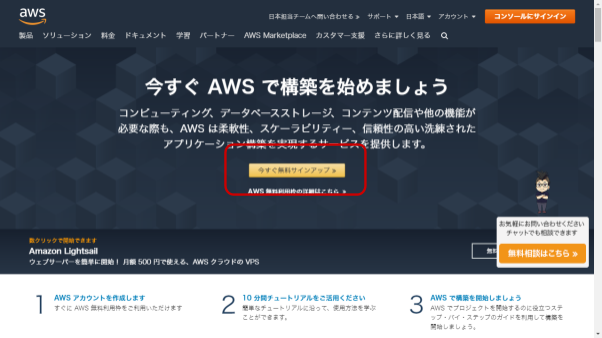
AWS マネジメントコンソールへログインするために必要な情報を設定します。
一番最初に右上の言語が日本語になっているか確認してください。なっていない場合は日本語に変更してから進めてください。
フォームは全ての項目が必須入力となっています。準備しておいた情報を利用します。
項目 | 解説 |
E メールアドレス | AWS マネジメントコンソールへログインする際の ID を指定します。 |
パスワード / パスワードの確認 | パスワードで利用できる文字の条件を満たすように入力します。 パスワードの確認には同じものを入力します。 |
AWS アカウント名 | ご利用者※の氏名を英語表記（アルファベットで「名 性」の順）で入力します。 |
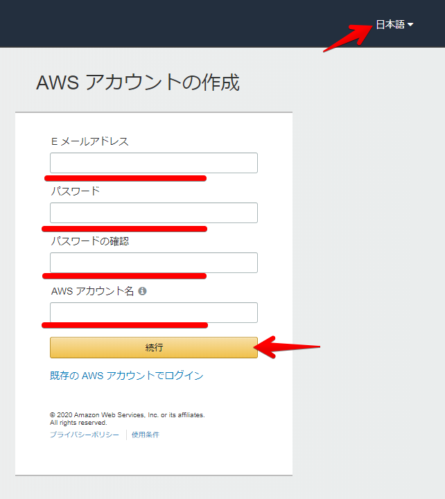
全てを入力したら［続行］をクリックします。
準備しておいた連絡先の情報を入力します。
項目 | 解説 |
アカウントの種類 | AWS アカウントをパーソナル(個人)もしくはプロフェッショナル(法人)どちらで利用するかを選びます。 作成時点で不明な場合はパーソナルを選び、後ほど AWS マネジメントコンソール上でプロフェッショナルへ切り替えることも可能です。 |
フルネーム | 名前を英語表記（アルファベットで「名 性」の順）で入力します。 ひとつ前のフォームから引き継がれていれば、その情報を利用できます。 |
電話番号 | 電話番号をハイフンや記号なしで入力します。 例: |
国/地域 | 国を選んでください。 |
アドレス | 住所を英語表記で入力します。 例: |
市区町村 | 住所の市区町村名を英語表記で入力します。 例: |
都道府県 | 住所の都道府県名を英語表記で入力します。 例: |
郵便番号 | 住所の郵便番号をハイフン込みで入力します。 例: |
AWS カスタマーアグリーメントの確認 | 内容を確認し同意できたらチェックをつけます。 |
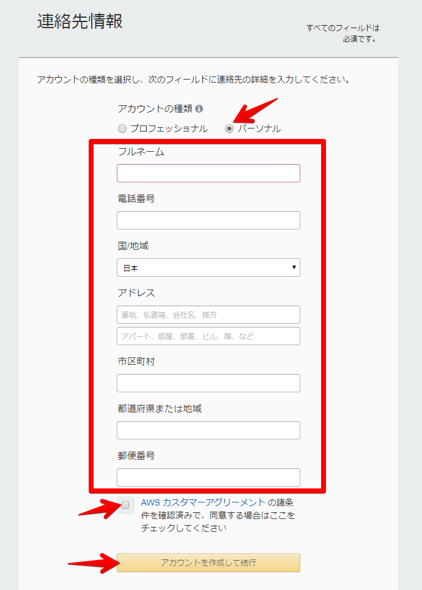
全てを入力したら［アカウントを作成して続行］をクリックします。
準備しておいた AWS サービスの支払いに使用する情報を入力します。
項目 | 解説 |
クレジット/デビットカード番号 | カード番号を入力します。 |
有効期限 | 月/年の順で入力します。 |
カード保有者の氏名 | カード名義をクレジットカードに記載されている表示通りに入力します。 |
請求先住所 | 先ほど入力した連絡先と同一の場合は「連絡先住所を使用する」を、別の場所を設定したい場合は「新しい住所を使用する」を選び、表示されたフォームに入力してください。 |
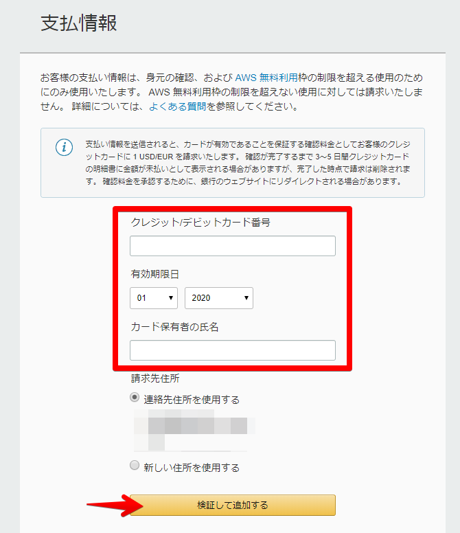
全てを入力したら［検証して追加する］をクリックします。
SMS(ショートメッセージ) もしくは電話を利用した本人確認が行われます。電話番号を入力すると「認証コード」が届き、その内容をフォームに入力することで完了します。
スマートフォン等の電話機をお手元に用意してください。
項目 | 解説 |
検証コードをどのように受けとりますか？ | どちらかを選んでください。 |
国またはリージョンコード | 日本（+81）を選びます。 |
電話番号 | 先頭の 例: |
セキュリティチェック | 画像上の文字を大文字／小文字など含め正確に入力します。 判別ができない場合はリロードマークで新しい画像を表示させることができます。 |
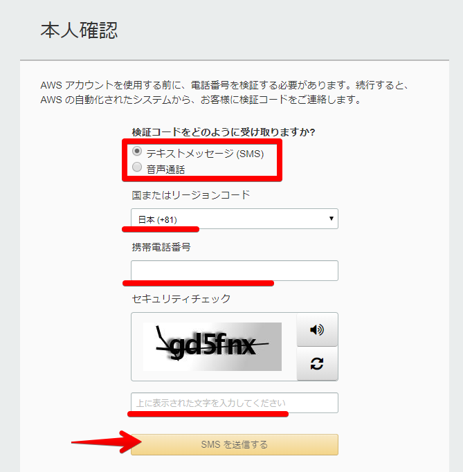
全てを入力したら［SMS を送信する］（もしくは［問い合わせてください］）をクリックします。
しばらくすると SMS もしくは電話で認証コードが届きます。
入力フォームに入力して［コードを検証］をクリックします。
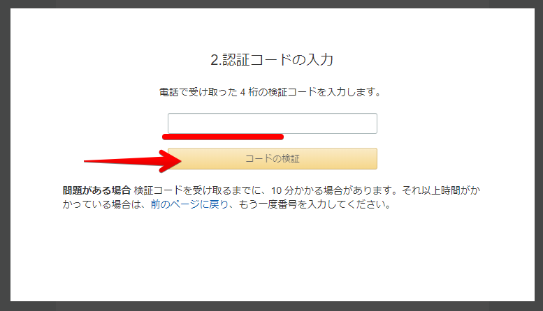
認証コードが正しい場合は本人確認が終了しましたと表示されるので、［続行］をクリックします。
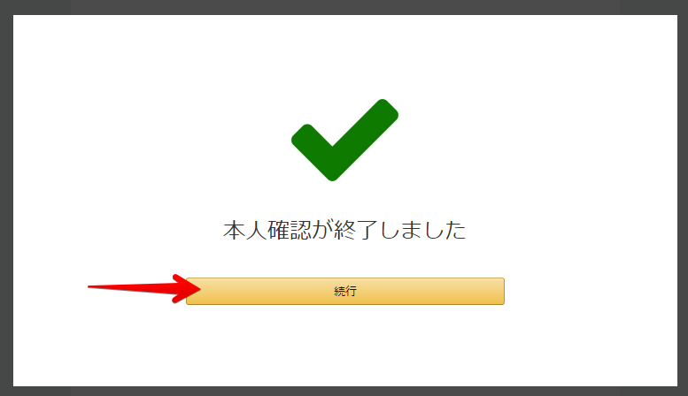
AWS のサポートプランの選択を行います。
この時点でアカウント作成時に有償サポートを必要としていない場合は無料のベーシックプランで構いません。アカウント作成後に追加や変更できます。
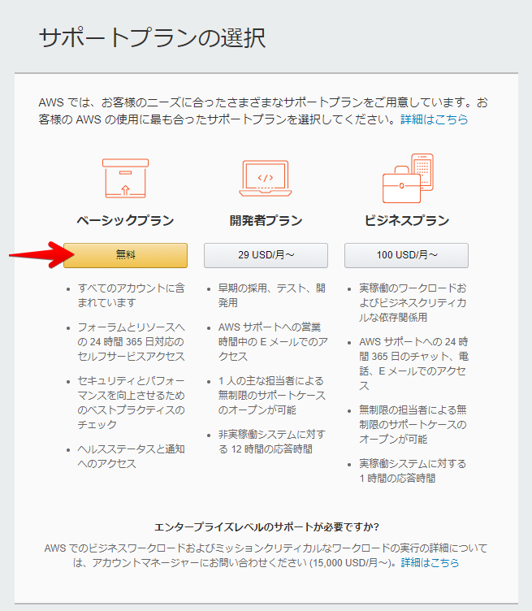
以上で AWS アカウント作成の作業は完了です。
しばらくするとお客様の AWS アカウントの準備ができました - 今すぐ始めましょうという件名のメールが AWS アカウント作成で使用したメールアドレスに届きます。
これで AWS マネジメントコンソールが利用可能となります。
これで AWS マネジメントコンソールが利用可能となりました。これ以降の操作方法について解説します。
AWS マネジメントコンソールへのサインインは AWS のホームページ右上のコンソールにサインインをクリックすることで表示できます。
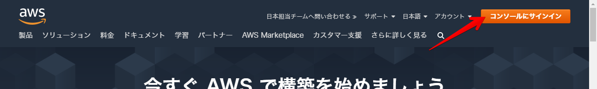
サインインはメールアドレス・パスワードをそれぞれ入力していきます。
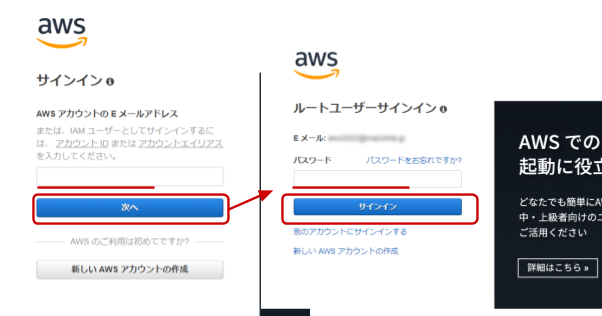
サインインに成功すると AWS マネジメントコンソールが表示されます。
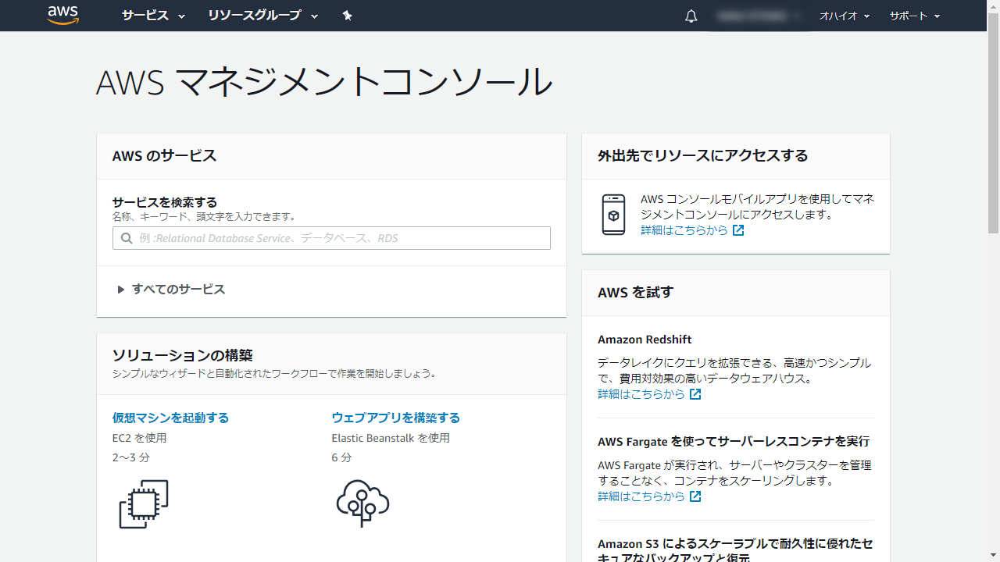
AWS マネジメントコンソールからのサインアウトは、右上のアカウント名が表示されているボタンをクリックすると現れるサインアウトを使用します。
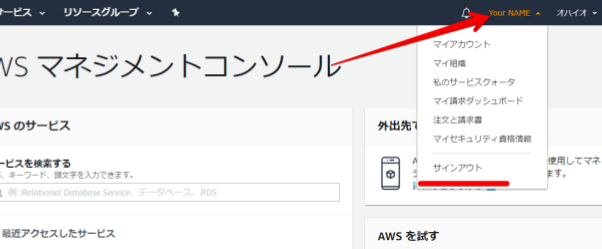
作成した AWS アカウントはルートアカウント（またはルートユーザー）と呼ばれる、全ての権限を有する特権アカウントとなります。
AWS をより安心してお使いいただくための情報が公開されていますのでご利用ください。